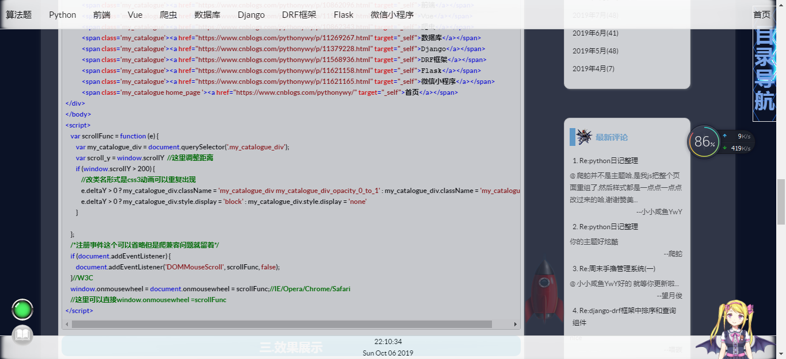

<!--小标题-->
<style>
.my_catalogue_div {
line-height: 50px;
position: fixed;
height: 50px;
width: 100%;
background: url(https://images.cnblogs.com/cnblogs_com/pythonywy/1456775/o_44.png);
background-size: 100% 100%;
top: 0;
z-index: 999999;
}
.my_catalogue {
margin-right: 10px;
float: left;
display: block;
position: initial;
}
.my_catalogue a:link, .my_catalogue a:visited, .my_catalogue a {
display: inline-block;
vertical-align: middle;
font-size: 15px;
padding: 0 10px;
-webkit-transform: perspective(1px) translateZ(0);
transform: perspective(1px) translateZ(0);
box-shadow: 0 0 1px rgba(0, 0, 0, 0);
position: relative;
-webkit-transition-property: color;
transition-property: color;
-webkit-transition-duration: 0.5s;
transition-duration: 0.5s;
color: black;
text-decoration: none;
}
.my_catalogue a:before {
content: "";
position: absolute;
z-index: -1;
top: 0;
left: 0;
right: 0;
bottom: 0;
background: #222;
transform: scaleY(0);
transform-origin: 50% 0;
transition-property: transform;
transition-duration: 0.5s;
transition-timing-function: ease-out;
}
.my_catalogue a:hover {
color: white;
box-shadow: none;
padding: 0 10px;
}
.my_catalogue a:hover::before {
transform: scaleY(1);
transition-timing-function: cubic-bezier(0.52, 1.64, 0.37, 0.66);
}
@keyframes opacity_0_to_1 {
0% {
opacity: 0;
}
100% {
opacity: 0.9;
}
}
.my_catalogue_div_opacity_0_to_1 {
animation-name: opacity_0_to_1;
animation-duration: 2s;
animation-fill-mode: forwards;
}
.home_page {
right: 0;
margin: 0;
position: absolute;
}
.show_time {
position: fixed;
bottom: 0;
height: 40px;
background: url(https://images.cnblogs.com/cnblogs_com/pythonywy/1456775/o_44.png);
background-size: 100% 100%;
color: black;
line-height: 20px;
text-align: center;
width: 100%;
}
</style>
<body>
<div class="my_catalogue_div" style="display: none">
<span class='my_catalogue'><a href="https://www.cnblogs.com/pythonywy/p/10911404.html" target="_self">算法题</a></span>
<span class='my_catalogue'><a href="https://www.cnblogs.com/pythonywy/p/10862019.html"
target="_self">Python</a></span>
<span class='my_catalogue'><a href="https://www.cnblogs.com/pythonywy/p/10862096.html" target="_self">前端</a></span>
<span class='my_catalogue'><a href="https://www.cnblogs.com/pythonywy/p/11568799.html" target="_self">Vue</a></span>
<span class='my_catalogue'><a href="https://www.cnblogs.com/pythonywy/p/10862343.html" target="_self">爬虫</a></span>
<span class='my_catalogue'><a href="https://www.cnblogs.com/pythonywy/p/11269267.html" target="_self">数据库</a></span>
<span class='my_catalogue'><a href="https://www.cnblogs.com/pythonywy/p/11379228.html"
target="_self">Django</a></span>
<span class='my_catalogue'><a href="https://www.cnblogs.com/pythonywy/p/11568936.html"
target="_self">DRF框架</a></span>
<span class='my_catalogue'><a href="https://www.cnblogs.com/pythonywy/p/11621158.html"
target="_self">Flask</a></span>
<span class='my_catalogue'><a href="https://www.cnblogs.com/pythonywy/p/11621165.html"
target="_self">微信小程序</a></span>
<span class='my_catalogue home_page '><a href="https://www.cnblogs.com/pythonywy/" target="_self">首页</a></span>
</div>
<div class="show_time" style="display: none">
</div>
</body>
<script>
var scrollFunc = function (e) {
var my_catalogue_div = document.querySelector('.my_catalogue_div');
var show_time = document.querySelector('.show_time');
if (window.scrollY > 200) {
e.deltaY > 0 ? my_catalogue_div.className = 'my_catalogue_div my_catalogue_div_opacity_0_to_1' : my_catalogue_div.className = 'my_catalogue_div';
e.deltaY > 0 ? my_catalogue_div.style.display = 'block' : my_catalogue_div.style.display = 'none';
e.deltaY > 0 ? show_time.className = 'show_time my_catalogue_div_opacity_0_to_1' : show_time.className = 'show_time';
e.deltaY > 0 ? show_time.style.display = 'block' : show_time.style.display = 'none'
}
};
/*注册事件*/
if (document.addEventListener) {
document.addEventListener('DOMMouseScroll', scrollFunc, false);
}//W3C
window.onmousewheel = document.onmousewheel = scrollFunc;//IE/Opera/Chrome/Safari
</script>
<script>
//时间
function get_time() {
var obj = new Date();
var obj_time = obj.toTimeString().split(' ')[0];
var obj_data = obj.toDateString();
var show_time = document.querySelector('.show_time');
show_time.innerHTML = '<spen>' + obj_time + '</spen>' + '<br>' + '<spen>' + obj_data + '</spen>'
}
setInterval(get_time, 1000)
</script>
